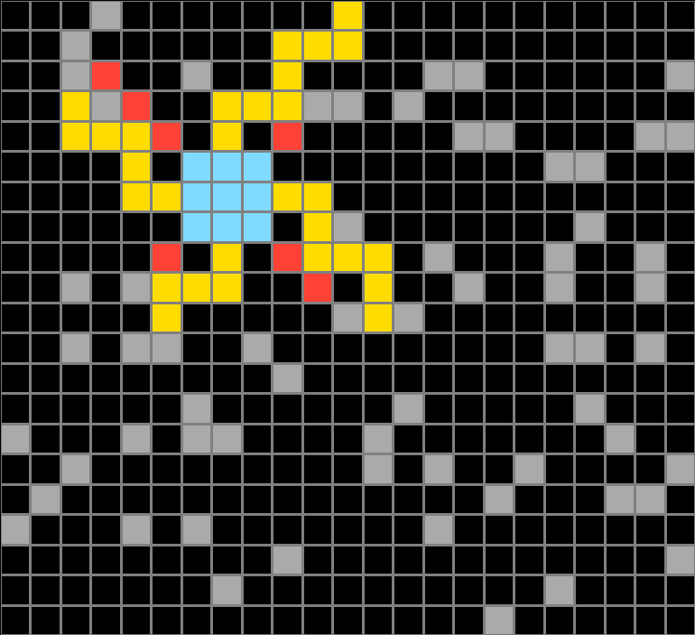
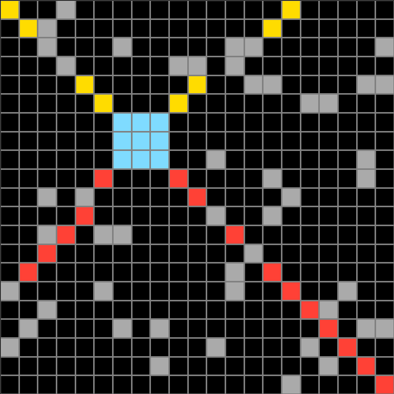
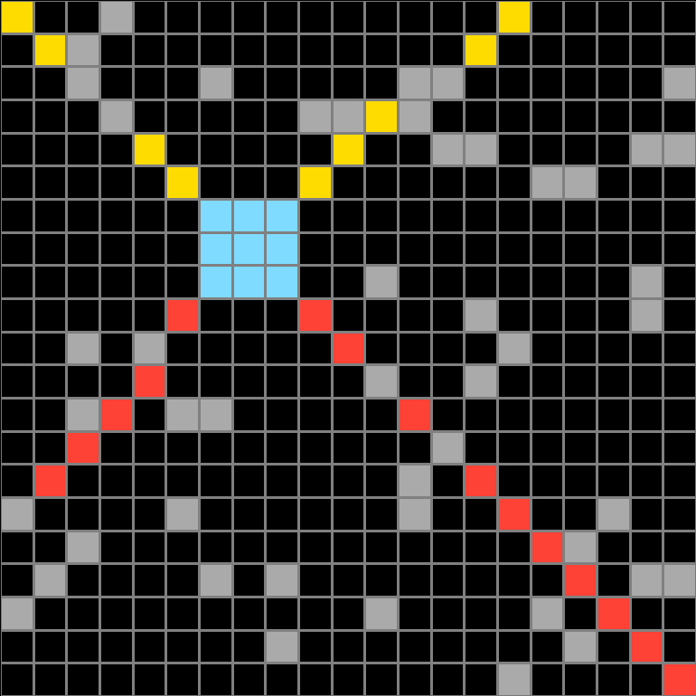
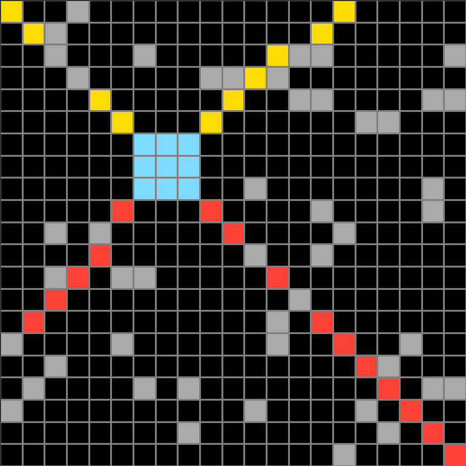
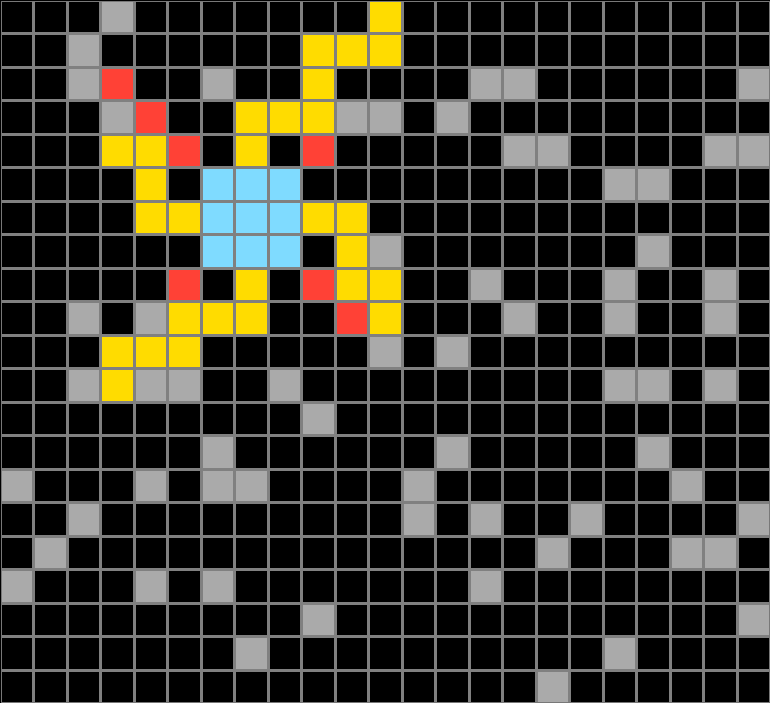
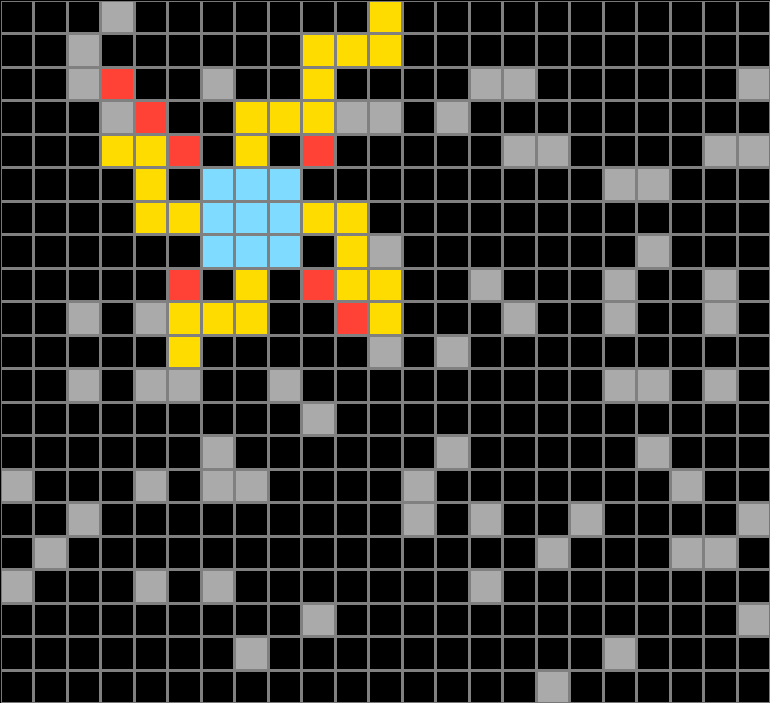
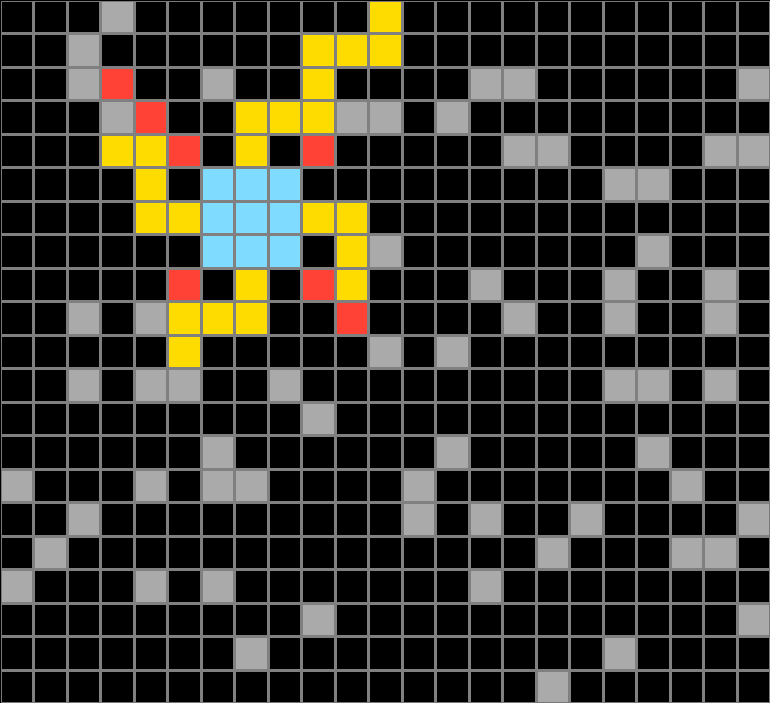
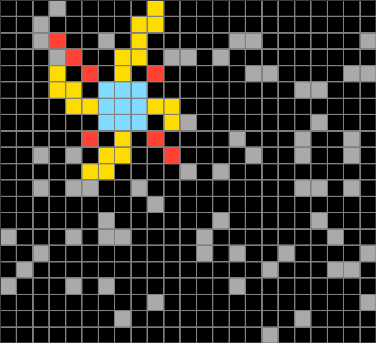
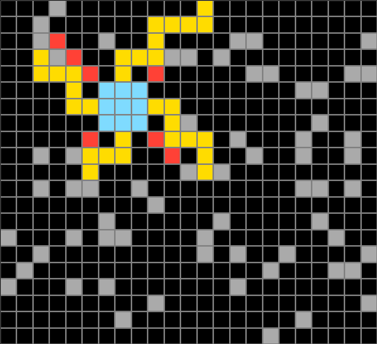

212895b5.json
Navigation
Train Examples


Test Example


Participant 1
Initial description: Red diagonal lines from the corner, and staggered yellow lines from center
Final description: Red diagonal lines from the corner, and staggered yellow lines from center

Participant 2
Initial description: Locate the light blue square that contains three rows of light blue squares. Starting from the middle square on top, color yellow the two black squares above it. Then color yellow the two black square to the right. Keep this going creating a zig zag, but stop the moment there is a gray square in the way. Continue this process for each side of the square, as if rotated clockwise. Lastly, at each corner of the blue square, color in each black square diagonal from it until a gray square is in the way.
Final description: Locate the light blue square that contains three rows of light blue squares. Starting from the middle square on top, color yellow the two black squares above it. Then color yellow the two black square to the right. Keep this going creating a zig zag, but stop the moment there is a gray square in the way. Continue this process for each side of the square, as if rotated clockwise. Lastly, at each corner of the blue square, color in each black square diagonal from it until a gray square is in the way.

Participant 3
Initial description: After mimicking the exact input, put yellow boarders going to the top and red borders going to the bottom.
Final description: I copied the input cell as is and put red cells going down to the bottom border at a diagonal angle, and the yellow cells going up to the top border at a diagonal line.



Participant 4
Initial description: follow the square. red expands from corners until end of map or grey spots. yellow goes 2, than 3, until stopped by grey
Final description: weak. I tried to follow it to a tee.



Participant 5
Initial description: Red from the corners of the black box until it hits either a gray block or the edge of the field, and then yellow from the centers of the box until it hits a yellow.
Final description: I noticed that yellow required two up and three across. It has to go till it can't go in the direction of the next sequence because of the edge of the map or a grey box. You're basically making a pinwheel pattern.

